目次
- 用語集
- commit とは
- branch とは
- push とは
- merge とは
- fetch と pull とは
- 逆 merge とは(相手の branch を取り込む)
- conflict とは
- branch 汚染とは
- 安全に試すコツ
- 過去の commit に巻き戻す方法
- GUIツール(GitHub Desktop・Sourcetree・TortoiseGit)の用語集
- 練習問題(reset と revert を GUI で試す)
このページでは、コマンドの打ち方ではなく、用語の意味を覚えることを目的にしています。GUI ツールのボタンや、画面に出てくるメッセージに「その名前が出てきたら、何を意味するのか」が分かるようになりましょう。
1. 用語集
この資料に出てくる Git の用語を、先にまとめて紹介します。くわしい説明は、2章以降で順番に行います。
★ が付いている用語は、まず覚えるものです。ほかの用語は、出てきたときにこの表で確認すれば大丈夫です。
| 用語 | 簡単な説明 |
|---|---|
| commit ★ | 作業の途中経過を「セーブ」して、履歴に残すこと。また、その1回分の記録 |
| hash | commit ごとに自動で付く英数字の ID(背番号のようなもの) |
| branch ★ | 履歴の流れを枝分かれさせて、別々に作業を進めるための仕組み |
| HEAD | 今自分がいる branch(や commit)を示す目印 |
| stage ★ | 次の commit に含める変更を、いったん置いておく場所 |
| local / remote | local は手元の PC、remote は GitHub など、ネット上の置き場所 |
| push ★ | 手元の commit を remote に送ること |
| fetch | remote の更新情報を取得するだけで、手元の作業には取り込まないこと |
| pull ★ | remote の更新を取得して、今の branch に取り込むこと(fetch + merge) |
| merge ★ | 別の branch の変更を、今の branch に取り込んで合流させること |
| 逆 merge | 最新の main を、自分が作業中の branch に取り込むこと(この資料での呼び方) |
| conflict ★ | 同じ場所を別々に変更したため、Git が自動で merge できない状態 |
| Pull Request(PR) ★ | 「この変更を取り込んでください」と GitHub 上で依頼し、確認してもらう仕組み |
| reset | 履歴を過去の commit まで巻き戻すこと |
| revert | 過去の commit を打ち消す、新しい commit を作ること |
2. commit とは
commit は、作業の途中経過を「セーブ」して、履歴に残すことです。ゲームのセーブのように、あとからその時点の状態に戻せます。commit を重ねると、変更の記録が順番に並んだ「履歴」になります。
各 commit には、見分けるための ID(hash)※ が自動で付きます。
※ hash とは、commit ごとに自動で付く、英数字の文字列です(例: a1b2c3d)。「背番号」のようなもので、巻き戻したいときに「この commit に戻す」と指定するのに使います。History(履歴の一覧)の画面で確認できます。
変更は次の4つの場所を通ります。
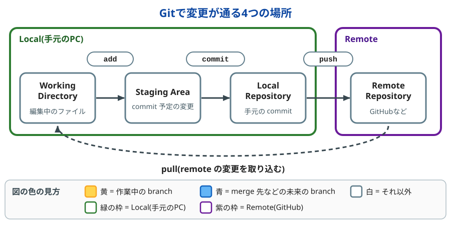
- working directory: 実際にファイルを編集している場所(フォルダ)
- stage(図では Staging Area): 次の commit に含める変更を、いったん置いておく場所
- local repository: 手元の PC にある、commit の履歴
- remote repository: GitHub など、ネット上にある履歴
手元の PC 側を local、GitHub など外側を remote と呼びます。
この流れで出てくる名前は、次の意味です。
- status という名前が出てきたら、今の状態(どのファイルが変更されているか、stage に載っているか)を確認するということです。
- add(Stage)という名前が出てきたら、変更を stage に載せる(commit の対象に選ぶ)ということです。
- commit という名前が出てきたら、stage にある変更を、手元の履歴に記録するということです。
- message という名前が出てきたら、その commit で何をしたかを書く説明文ということです。
- push という名前が出てきたら、手元の commit を remote へ送るということです。
- log や History という名前が出てきたら、commit の履歴の一覧ということです。
補足
message は、あとから History を見たときに「何をしたか」が分かるように書きます。
| 分かりにくい例 | 分かりやすい例 |
|---|---|
| 修正 | スコアが2回加算される不具合を修正 |
| 更新 | タイトル画面にスタートボタンを追加 |
| あああ | プレイヤーの移動速度を 5 から 3 に変更 |
補足
- fetch という名前が出てきたら、remote の更新を取得する(まだ手元には取り込まない)ということです。
- merge という名前が出てきたら、取得した変更を手元に取り込むということです。
- pull(プル)という名前が出てきたら、fetch と merge をまとめて行うということです。
取り込む前に内容を確認したいときは、先に fetch だけを行います。
3. branch とは
branch は、履歴の流れを枝分かれさせて、別々に作業を進めるための仕組みです。元の流れ(基本となる branch の main)に影響を与えずに、新機能の試作や修正を進められます。HEAD は「今自分がいる branch」を示す目印です。
使い方の基本は、main を安定版として保ち、作業は別の branch で行い、完成したら main に merge(変更を取り込んで合流)することです。
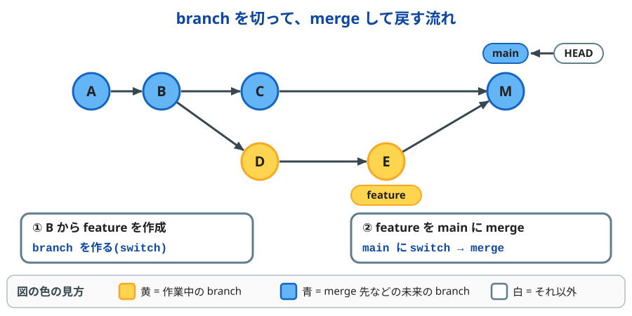
- branch という名前が出てきたら、枝分かれした作業の流れのことです。「branch を切る」は、新しい branch を作るということです。
- main という名前が出てきたら、基本となる、安定版の branch のことです。古い repository では master という名前のこともありますが、同じ役割です。
- feature という名前が出てきたら、新しい機能を作るための、作業用の branch ということです(例:
feature/timer)。 - switch や checkout という名前が出てきたら、branch を切り替える(移動する)ということです。
- merge という名前が出てきたら、別の branch の変更を、今いる branch に取り込むということです。
- delete branch という名前が出てきたら、使い終わった branch を削除するということです。merge 済みなら、消しても変更は main に残っています。
補足
仕組みとしては、branch は commit に付けた名前(しおりのようなもの)です。ファイルを丸ごとコピーするわけではないので、作成は一瞬で軽く済みます。
補足
checkout は、branch の移動に使われていた古い呼び方です。現在の Git では、branch の移動は switch、ファイルの復元は restore と、役割が分かれた名前になっています。Sourcetree や TortoiseGit では、今も Checkout という名前が使われています。どちらが出てきても「branch を切り替える」と読みかえてください。
4. push とは
push は、手元(local)の commit を remote(GitHub など)に送ることです。送られるのは commit 済みの内容だけで、commit していない変更は送られません。送る単位は branch です。
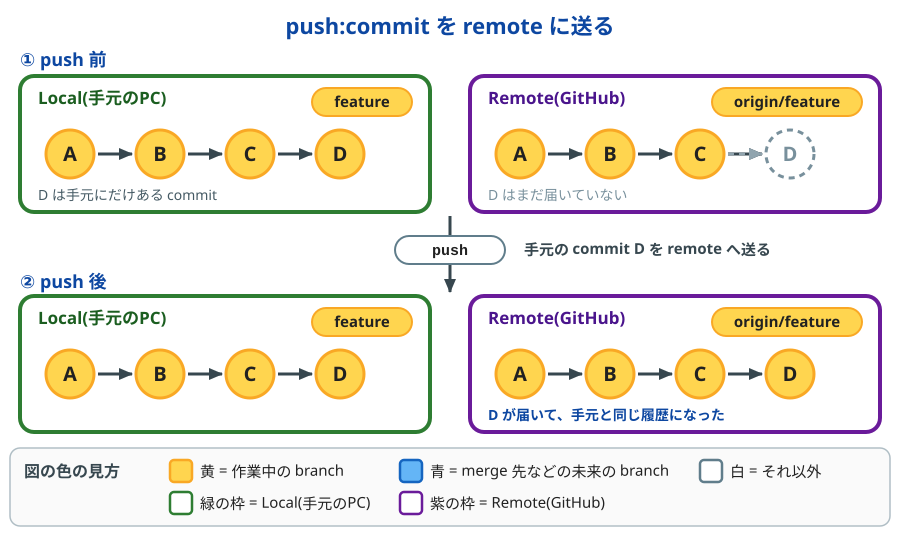
- origin という名前が出てきたら、remote(送り先)につけられた標準の名前のことです。ふつうは GitHub 上の repository を指します。
- Publish branch という名前が出てきたら、作った branch を、初めて remote に送るということです(GitHub Desktop の表示)。
- upstream(追跡先)という名前が出てきたら、「この branch はいつも、remote のこの branch に送る」という、覚えておいた送り先のことです。一度設定すると、2回目からは送り先を指定しなくても push できます。
- Push origin という名前が出てきたら、origin に push するということです。
補足
「up to date with 'origin/...'」という表示が出てきたら、手元と remote が同じ状態ということです。
注意
「rejected(拒否)」という表示が出てきたら、remote のほうが先に進んでいる(他の人が先に push した)ため、push できなかったということです。その場合は、先に pull で remote の変更を取り込んでから、もう一度 push します。force push(強制的に上書きする push)はしないでください。
5. merge とは
merge は、別の branch で進めた作業を、今いる branch に取り込んで合流させることです。ふつうは、feature で作業が終わったら、main に取り込むために使います。
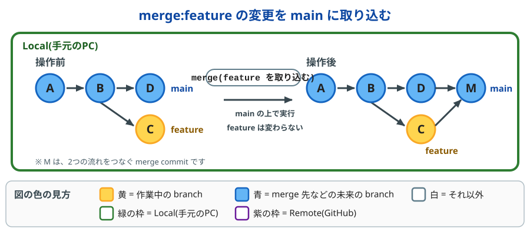
取り込む側ではなく、取り込まれる側(merge 先)に移動してから行うのがポイントです。
- merge 先の branch(
main)に切り替える featureを、今の branch(main)に merge する
| 意味 | Git の用語 | GitHub Desktop | Sourcetree | TortoiseGit |
|---|---|---|---|---|
| merge 先に切り替える | switch(checkout) | Current Branch で main を選ぶ | Checkout | Switch/Checkout |
| branch を取り込む | merge | Branch → Merge into Current Branch → feature を選ぶ | feature を右クリック → Merge | Merge → feature を選ぶ |
- Merge into Current Branch という名前が出てきたら、選んだ branch を、今いる branch に取り込むということです。
- merge commit という名前が出てきたら、2つの branch の変更をまとめた、合流のための commit ということです。
- fast-forward という名前が出てきたら、merge commit を作らずに、main を feature の位置まで進めるだけで済んだということです。
補足
merge すると、両方の変更をまとめた commit(merge commit)が1つ増えることがあります。main 側に新しい commit がなく、一直線につなげられるときは、merge commit は作られず、main が feature の位置まで進むだけです(fast-forward)。
| main 側に新しい commit がない | main 側にも新しい commit がある | |
|---|---|---|
| merge のしかた | fast-forward(main の目印を、feature の先頭まで進めるだけ) | merge commit を作って、2本の流れを合流させる |
| History の見た目 | 一直線のまま | 線が分かれて、また1本に戻る |
| commit の数 | 増えない | merge commit が1つ増える |
注意
merge で変わるのは、今いる branch(merge 先)だけです。取り込んだ側の feature は変わりません。同じ場所を別々に変更していると conflict が起きます(「8. conflict とは」)。
6. fetch と pull とは
他の人が remote に push すると、remote のほうが手元より先に進みます。その更新を手元に持ってくる方法が fetch と pull です。
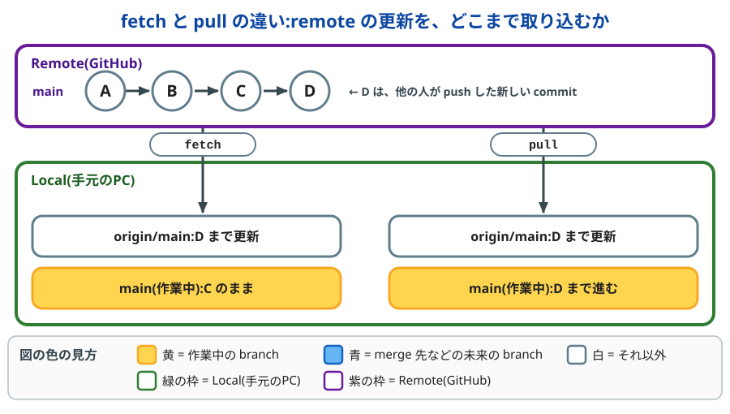
先に、よく似た3つの名前の違いを整理しておきます。
| 名前 | 何か | どこにあるか | いつ変わるか |
|---|---|---|---|
origin |
remote(GitHub 上の repository)につけた名前 | -(名前だけ) | - |
main |
自分が作業する main | 手元の PC | 自分が commit・merge・pull したとき |
origin/main |
GitHub 上の main を、最後に確認したときの控え | 手元の PC | fetch・pull・push したとき |
手元には main と origin/main の2つがありますが、origin/main は「GitHub 上の main がこうだった」というメモのようなものです。自分で編集するのは main だけです。
- fetch という名前が出てきたら、remote の更新情報を取得するだけということです。手元の
origin/main(remote の main のコピー)は更新されますが、作業中の branch やファイルは変わりません。 - pull という名前が出てきたら、fetch に加えて、取得した内容を作業中の branch に merge するということです。つまり pull は「fetch + merge」です。
- origin/main という名前が出てきたら、「remote の main を、手元に控えておいたもの」ということです。自分の
mainとは別のものです。 - 「behind 'origin/main' by 2 commits」という表示が出てきたら、remote のほうが2つ先に進んでいて、手元に取り込んでいない commit があるということです。pull すると追いつきます。
- 「ahead of 'origin/main' by 1 commit」という表示が出てきたら、手元のほうが1つ先に進んでいて、まだ push していない commit があるということです。
| 意味 | Git の用語 | GitHub Desktop | Sourcetree | TortoiseGit |
|---|---|---|---|---|
| 更新情報だけ取得する | fetch | Fetch origin | Fetch | Git Fetch |
| 取得して取り込む | pull | Pull origin | Pull | Git Pull |
補足
迷ったら、まず fetch で確認してから取り込むのが安全です。fetch のあとは、次のところで確認できます。
- GitHub Desktop:ボタンが Pull origin に変わり、取り込んでいない commit の数が表示されます
- Sourcetree・Fork:History(グラフ)に
origin/mainが、自分のmainより先に表示されます。その commit をクリックすると、変更内容が見られます
pull は、取り込み中に conflict が起きることがあります(「8. conflict とは」)。
補足
pull しても、手元に push していない commit がなければ fast-forward になるので、merge commit は増えません。手元と remote の両方に新しい commit があるときだけ、merge commit が作られます。
7. 逆 merge とは(相手の branch を取り込む)
ふつうの merge は、作業した feature を main に取り込みます。逆 merge はその反対で、最新の main(相手の branch)を、自分が作業中の branch に取り込むことです。正式な Git 用語ではなく、この資料での呼び方です。
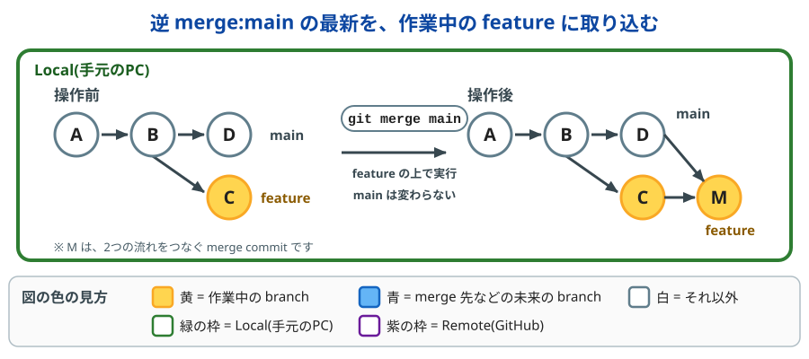
- ふつうの merge: 自分の branch → main(作業の完成を main に渡す)
- 逆 merge: main → 自分の branch(main の最新を自分の branch に受け取る)
自分が作業している間に、ほかの人が main を更新していることがあります。そのまま作業を続けて Pull Request を出すと、最後に conflict が見つかって困ります。逆 merge で先に最新を取り込んでおけば、conflict を自分の branch の上で、早めに直せます。
mainに切り替えて、pull で最新にする- 自分の branch(
feature)に戻る mainを、今の branch(feature)に merge する(逆 merge)
補足
fetch したあとなら、main に切り替えずに、origin/main を自分の branch に直接 merge することもできます(GitHub Desktop の Merge into Current Branch では、一覧に origin/main も出てきます)。ただし、手元の main は古いまま残るので、慣れるまでは上の手順のほうが分かりやすいです。
| 意味 | Git の用語 | GitHub Desktop | Sourcetree | TortoiseGit |
|---|---|---|---|---|
| 自分の branch に切り替える | switch(checkout) | Current Branch で選ぶ | Checkout | Switch/Checkout |
| main を取り込む | merge | Branch → Merge into Current Branch → main を選ぶ | main を右クリック → Merge | Merge → main を選ぶ |
- update from main や Merge main into ... という名前が出てきたら、main の最新を、自分の branch に取り込む(この資料でいう逆 merge)ということです。
- rebase という名前が出てきたら、main の最新を取り込む、merge とは別の方法ということです(今は覚えなくて大丈夫です)。merge commit を作らないので History が一直線になりますが、commit を作り直すため、push 済みの branch で行うと force push が必要になります。初めのうちは、逆 merge(merge)を使ってください。
補足
取り込み先は、いま選んでいる(作業中の)branch です。merge する前に、必ず自分の branch に切り替わっていることを確認します。main に切り替えたまま実行すると、向きが逆になります。
注意
同じ場所を変更していると、逆 merge でも conflict が起きます。その場合は、「8. conflict とは」の手順で解消します。逆 merge の後は、自分の branch に merge commit が1つ増えます。
8. conflict とは
conflict(コンフリクト)は、同じファイルの同じ場所を別々に変更したため、Git が「どちらを採用するか」を自動では決められない状態です。2人が同じ文章の同じ行を、別々に書き換えたときのようなものです。
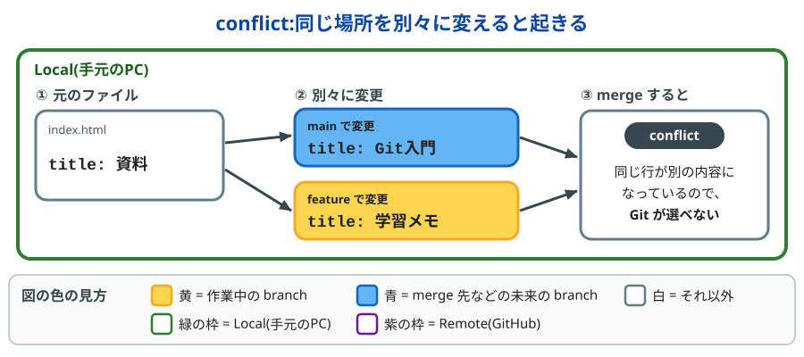
- 起きるとき: merge で別の branch を取り込むときや、pull で remote の変更を取り込むときに起きます
- 起きないとき: 別のファイルや、同じファイルの別の場所を変更していた場合は、Git が自動で merge します
conflict はエラーではなく、「ここは人が決めてください」という Git からの確認です。
- 「CONFLICT」という表示が出てきたら、自動で merge できない場所があったということです。
- 「both modified」や「conflicted files」という名前が出てきたら、そのファイルが両方の branch で変更されていて、conflict しているということです。
conflict の解消方法
conflict が発生すると、Git は該当のファイルに、conflict の発生を示す行を書き込みます。この行を手がかりに、残す内容を決めます。
<<<<<<< HEAD
title: Git入門
=======
title: 学習メモ
>>>>>>> feature
| conflict の発生を示す行 | 意味 |
|---|---|
<<<<<<< HEAD 〜 ======= |
今いる branch(この例では main)の内容 |
======= 〜 >>>>>>> feature |
merge で取り込む branch(feature)の内容 |
補足
HEAD 側は、いつも「今いる branch」です。
- ふつうの merge(main にいて feature を取り込む)→ HEAD は
main - 逆 merge(feature にいて main を取り込む)→ HEAD は
feature
解消は、conflict の発生を示す行を消して、残す内容を決めることです。
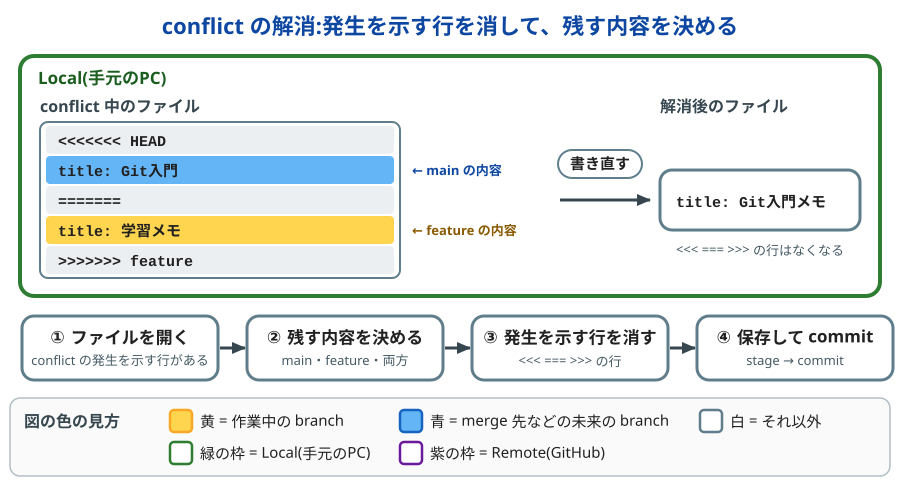
- conflict が出たファイルを開く
- 残す内容を決める(
mainの内容、featureの内容、または両方を合わせた内容) - conflict の発生を示す行(
<<<<<<<、=======、>>>>>>>の3種類)を消す - 保存して、stage に載せる(解消したと伝える)
- commit して、merge を完了する
GUIツールでは、次のように操作します。
| 手順 | GitHub Desktop | Sourcetree | TortoiseGit |
|---|---|---|---|
| ① conflict のファイルを探す | Changes タブの conflicted files | ファイルを右クリック → Resolve Conflicts | conflict のファイルを右クリック → TortoiseGit のメニュー |
| ② 開いて直す | Open in エディタ名 | Launch External Merge Tool | Edit Conflicts |
| ③ 解消したと伝える | 自動で stage される | Mark Resolved | TortoiseGit → Resolved |
| ④ commit する | Commit merge | Commit | Git Commit |
- Resolve / Resolved / Mark Resolved という名前が出てきたら、conflict を解消した(解消したと Git に伝える)ということです。
- Mine(ours)という名前が出てきたら、今いる branch 側の内容ということです。
- Theirs という名前が出てきたら、merge で取り込もうとしている相手の branch 側の内容ということです。
補足
Abort merge(merge の中止)という名前が出てきたら、merge を取り消して、merge する前の状態に戻すということです。途中でやめたいときに使います。
注意
Sourcetree の Resolve Using 'Mine' / Resolve Using 'Theirs' は、ファイル全体をどちらか片方に置き換えます。conflict していない部分の変更も消えるので、画像などのバイナリファイルや、片方を丸ごと捨てるときだけ使ってください。
補足
conflict を減らすには、作業を始める前に pull で最新の状態にして、同じファイルを同時に別々の人が編集しないようにします。
9. branch 汚染とは
branch 汚染は、本来入れたくないものが branch に混ざった状態です。よくある例は次のとおりです。
mainに直接、作りかけの変更を commit してしまった.vs/やLibrary/など、ツールが自動で作る不要なファイルを commit した- パスワードやAPIキーなどの秘密情報を commit した
- 別の作業の commit が混ざったまま merge した
予防策
- 作業は必ず branch を切って行う
.gitignoreを最初に用意する- commit 前に、status と diff で中身を確認する
- Pull Request(推奨):
mainへ直接 push せず、作業 branch を push して Pull Request(PR)を作り、差分を確認してから merge します。不要ファイルや秘密情報、別作業の commit の混入を、merge の前に見つけられます
Pull Request の流れは次の図のとおりです。
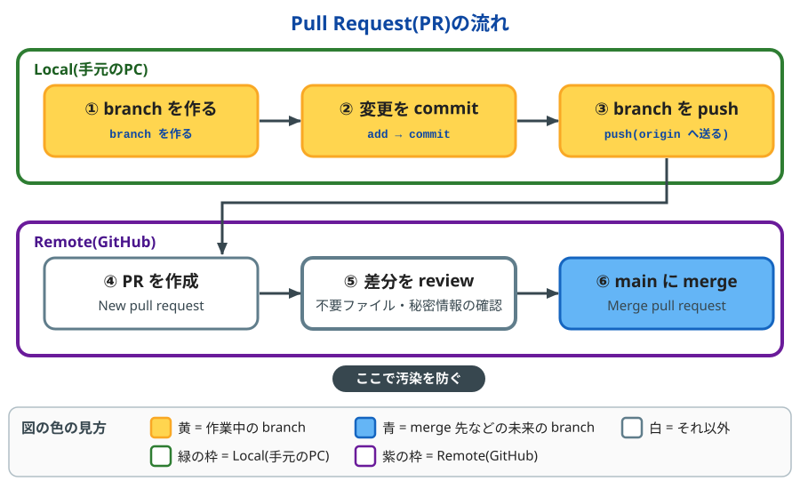
- .gitignore という名前が出てきたら、「このファイルは commit しない」と指定する設定ファイルのことです。
- diff(差分)という名前が出てきたら、変更前と変更後で、どこが変わったかを表示したものということです。
- Pull Request という名前が出てきたら、GitHub 上で「この branch を
mainに merge してください」と依頼する仕組みのことです。 - branch protection(branch 保護)という名前が出てきたら、
mainなどへの直接 push を禁止して、Pull Request を必ず通すようにする GitHub の設定のことです。
補足
Pull Request は、「私の branch を pull(取り込み)してください」とお願いする、という意味の名前です。操作の pull とは別のもので、実際に行われるのは merge です。GitLab では、同じ仕組みを Merge Request と呼びます。
補足
branch 保護を設定すると、うっかり main に push してしまう事故を、仕組みで防げます。無料プランでは public の repository でだけ使えます(private の repository で使うには、有料プランが必要です)。
補足
.gitignore は、repository のいちばん上のフォルダ(.git と同じ場所)に置きます。1行に1つ、commit しないフォルダやファイルを書きます。
# Unity が自動で作るフォルダ
Library/
Temp/
Logs/
# Visual Studio の設定
.vs/
# 秘密情報
.env
GitHub で repository を作るときに、Add .gitignore で「Unity」などのテンプレートを選ぶと、最初から用意されます。
補足
.gitignore に書いたファイルは、まだ Git の管理に入っていない場合だけ無視されます。すでに commit してしまったファイルは、Git の管理から外して(untrack。ファイル自体は消えません)、commit し直します。untrack という名前が出てきたら、ファイルは残したまま、Git の記録の対象から外すということです。
| ツール | untrack のしかた |
|---|---|
| Sourcetree | ファイルを右クリック → Stop Tracking |
| TortoiseGit | ファイルを右クリック → TortoiseGit → Delete (keep local) |
| コマンド | git rm --cached ファイル名(フォルダは git rm -r --cached フォルダ名) |
GitHub Desktop には untrack のメニューがないので、コマンドを使います。untrack したあと、commit して push すると、remote からも外れます(手元のファイルは残ります)。
10. 安全に試すコツ
巻き戻しの前に、今の状態にバックアップ用の branch(例: backup-before-reset)を作っておくと安心です。巻き戻しに失敗しても、その branch の状態まで reset すれば、元に戻せます。
- backup(バックアップ用の branch)という名前が出てきたら、作業前の状態を残しておくための、一時的な branch ということです。
補足
バックアップ用の branch は、巻き戻しがうまくいったことを確認してから削除します。
11. 過去の commit に巻き戻す方法
基本は、作業内容を過去の commit まで戻す(Hard Reset)か、打ち消す commit を作る(revert)のどちらかです。 まだ push していなければ Hard Reset、push 済みなら revert が目安です。
状況によって、使う操作の名前が変わります。
A. まだ commit していない変更を捨てる
- Discard(Discard Changes)や restore という名前が出てきたら、commit していないファイルの変更を捨てて、最後の commit の状態に戻すということです。
- unstage という名前が出てきたら、stage から外す(add を取り消す)ということです。ファイルの変更は残ります。
- clean という名前が出てきたら、Git の管理に入っていない(untracked の)新しいファイルを削除するということです。
注意
Discard や clean で消えた変更は戻せません。実行する前に、消える対象を確認してください。
B. commit 済みだが、まだ push していない
reset で、今の branch を過去の commit の状態まで戻します。reset には3つの種類があり、戻したあとに変更が残るかどうかが変わります。
| 種類 | commit | 取り消した commit の変更 | 使う場面 |
|---|---|---|---|
| Soft | 取り消す | stage に載った状態で残る(すぐ commit し直せる) | message を書き直したい、commit をまとめたい |
| Mixed(既定) | 取り消す | working directory に残る(stage には載っていない) | 入れるファイルを選び直したい |
| Hard | 取り消す | 消える | 変更ごと、なかったことにしたい |
- reset という名前が出てきたら、今の branch を、指定した過去の commit の状態まで戻すということです。
- Soft という名前が出てきたら、commit だけを取り消して、変更は stage に残すということです。
- Mixed という名前が出てきたら、commit と stage を取り消して、変更は working directory に残すということです。
- Hard という名前が出てきたら、commit も変更もすべて消して、指定した commit の状態にするということです。
補足
HEAD~1(または HEAD^)という名前が出てきたら、「今の commit の1つ前」ということです。HEAD~2 なら2つ前を指します。GUI クライアントでは、戻したい commit を History でクリックして選ぶので、自分で打つことはありません。ネットの解説やエラーメッセージで見かけたときに、意味が分かれば十分です。
注意
Hard は、working directory の変更も消します。迷ったときは、先に Soft か Mixed を使うか、バックアップ用の branch を作ってから実行してください。
C. すでに push 済み(共同作業中)
履歴を書き換えずに、「打ち消す commit」を新しく作る revert を使います。打ち消す commit を作ったら、push します。
- revert という名前が出てきたら、指定した commit の変更を打ち消す、新しい commit を作るということです。元の commit は履歴に残ります。
reset と revert の違いは次の図のとおりです。
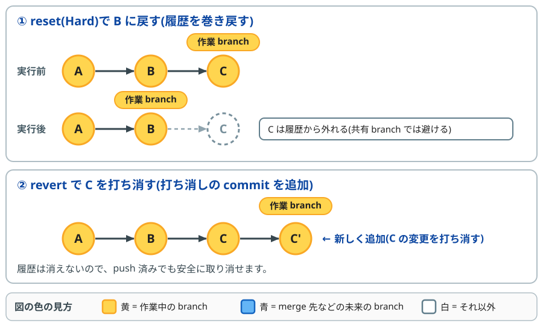
注意
- force push という名前が出てきたら、remote の履歴を、手元の履歴で強制的に上書きするということです。push 済みの commit を reset で消し、force push で remote にも反映する方法もありますが、他の人の履歴と食い違って混乱を招くので、共有 branch では避けるのが基本です。
- force with lease という名前が出てきたら、「自分が知らない変更が remote に増えていたら、上書きしない」という安全装置つきの force push ということです。自分専用の branch でやむを得ない場合は、こちらを使います。
- たとえば、自分だけが使っている
featurebranch を push したあとで、秘密情報を commit していたことに気づき、reset で履歴から消したい場合です。mainなど、ほかの人も使う branch では使いません。
D. 間違えて Hard Reset してしまった
- reflog という名前が出てきたら、HEAD が動いた記録(操作の履歴)のことです。消えたように見える commit も、多くの場合ここから見つけて、その時点に戻せます。
- HEAD@{2} という名前が出てきたら、reflog の中で「2回前に HEAD があった場所」ということです。
注意
reflog の記録は一定期間(既定では約90日)で消えます。復元は早めに行ってください。
迷ったときの選び方
| やりたいこと | 覚える名前 |
|---|---|
| commit 前の変更を捨てたい | Discard / restore |
| まだ push していない commit をやり直したい | reset |
| push 済みの変更を取り消したい | revert |
| 消してしまった履歴を探したい | reflog |
12. GUIツールの用語集
GUIツールのボタンやメニューは、名前が違っても、Git の同じ操作をしています。左の「Git の用語」を覚えておけば、どのツールでも何をするボタンか分かります。
補足
Fork を使っている場合も、ボタンの名前は Sourcetree とほぼ同じです(Fetch、Pull、Push、Stash、Commit など)。見つからないときは、commit やファイルを右クリックしたメニューを確認してください。
| 意味 | Git の用語 | GitHub Desktop | Sourcetree | TortoiseGit |
|---|---|---|---|---|
| commit 対象に選ぶ | add | 変更ファイルのチェック | Stage | Add |
| 変更を記録する | commit | Commit | Commit | Git Commit |
| remote へ送る | push | Push origin | Push | Git Push |
| 更新情報だけ取得する | fetch | Fetch origin | Fetch | Git Fetch |
| 取得して取り込む | pull | Pull origin | Pull | Git Pull |
| branch を作る | branch | New Branch | Branch | Create Branch |
| branch を切り替える | switch(checkout) | Current Branch で選ぶ | Checkout | Switch/Checkout |
| branch を統合する | merge | Merge into Current Branch | Merge | Merge |
| commit 前の変更を破棄する | restore(discard) | Discard Changes | Discard | Revert ⚠ |
| 過去に戻す | reset | Reset to commit | Reset current branch to this commit | Reset to this |
| 打ち消しの commit を作る | revert | Revert Changes in Commit | Reverse commit | Revert change by this commit ⚠ |
注意
⚠ の2つは、名前が似ていますが別の操作です。
TortoiseGit の Revert は、「commit 前の変更を破棄する」(restore / discard)という意味で、Git の用語の revert(打ち消しの commit を作る)とは別の操作です。TortoiseGit で打ち消しの commit を作るのは Revert change by this commit です。
補足
GitHub Desktop でも reset できます。History タブで戻したい commit を右クリックし、Reset to commit を選びます。
- 戻した後の変更は、working directory に未 commit の状態で残ります(Mixed に近い動き)
- 変更もいらない場合は、そのあと Discard Changes で破棄します(Hard と同じ結果)
- 戻せるのは、まだ push していない commit の範囲だけです。たとえば、A・B を push 済みで、C・D をまだ push していないとき、B・C には戻せますが、A には戻せません
- push 済みの commit を取り消したいときは、reset ではなく Revert Changes in Commit を使います
注意
メニュー名は、バージョンや表示言語で変わることがあります。
13. 練習問題(reset と revert を GUI で試す)
GitHub Desktop・Sourcetree・TortoiseGit のどれでも、同じ流れで試せます。手順は、図と同じ言葉(History、commit、reset、revert)で書いています。
注意
練習用の新しい repository で試してください。本物のプロジェクトでは行わないでください。
準備:練習用の履歴を作る
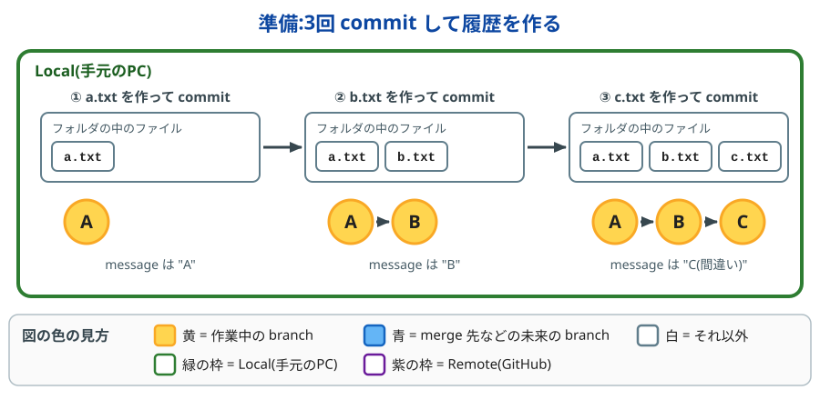
- 練習用の新しい repository(履歴を保存する専用のフォルダ)を作る
- その中に
a.txtを作って commit する(message はA) b.txtを作って commit する(message はB)c.txtを作って commit する(message はC(間違い))- History(ログ)に、A・B・C の3つが並んでいれば準備完了です
補足
message は、commit の説明文です。何でもかまいませんが、ここでは図と同じ A・B・C にします。
| 操作 | GitHub Desktop | Sourcetree | TortoiseGit |
|---|---|---|---|
| repository を作る | File → New repository | File → New → Create Local Repository | 空のフォルダを右クリック → Git Create repository here |
| commit する | 変更ファイルにチェック → message を入力 → Commit to main | ファイルを Stage → message を入力 → Commit | フォルダを右クリック → Git Commit → message を入力 → Commit |
| History を見る | History タブ | メイン画面の履歴(ログ) | フォルダを右クリック → Show Log |
問題1:reset で B まで戻す
C(間違い)の commit を、なかったことにします。目標は、a.txt と b.txt だけが残る状態(Hard Reset)です。
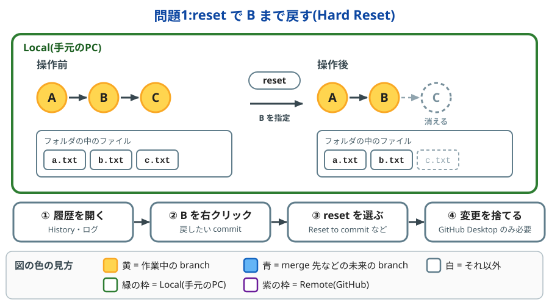
| 手順 | GitHub Desktop | Sourcetree | TortoiseGit |
|---|---|---|---|
| ① 履歴を開く | History タブ | メイン画面の履歴 | Show Log |
| ② B を右クリック | History の commit B を右クリック | 履歴の commit B を右クリック | ログの commit B を右クリック |
| ③ reset を選ぶ | Reset to commit | Reset current branch to this commit → Hard を選ぶ | Reset to this → Hard を選ぶ |
| ④ 変更を捨てる | Changes タブで Discard All Changes | 不要(Hard で消える) | 不要(Hard で消える) |
確認すること:History から C が消え、フォルダから c.txt もなくなっています。
補足
GitHub Desktop の Reset to commit は、戻した後の変更を working directory に残す動きです。そのため、c.txt を消すには④で変更を捨てます。
問題2:revert で C を打ち消す
履歴を消さずに、C の内容を打ち消す commit(C')を作ります。目標は、History に A・B・C・C' が残り、c.txt だけがフォルダから消える状態です。
問題1のあとは C が消えているので、新しい repository で準備をやり直してから始めます。
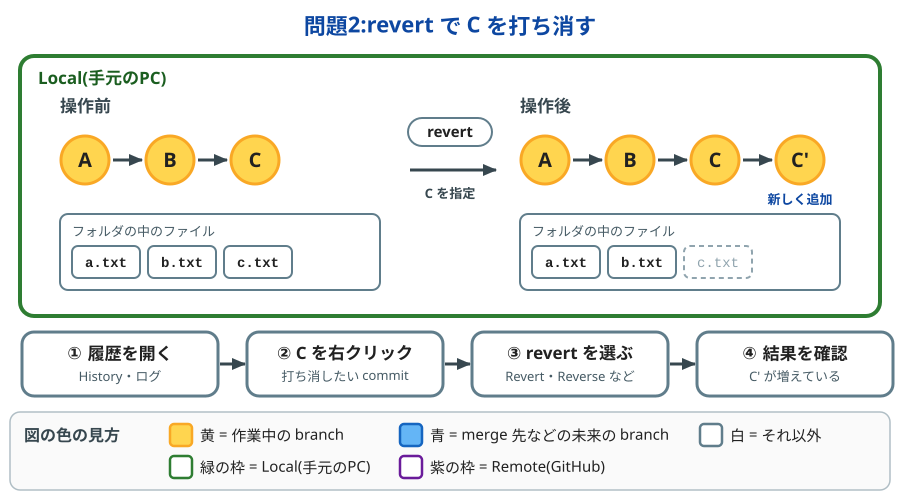
| 手順 | GitHub Desktop | Sourcetree | TortoiseGit |
|---|---|---|---|
| ① 履歴を開く | History タブ | メイン画面の履歴 | Show Log |
| ② C を右クリック | History の commit C を右クリック | 履歴の commit C を右クリック | ログの commit C を右クリック |
| ③ revert を選ぶ | Revert Changes in Commit | Reverse commit | Revert change by this commit |
| ④ 結果を確認 | History に C' が増えている | History に C' が増えている | History に C' が増えている |
確認すること:History に C' が増え、C は残ったままです。フォルダから c.txt はなくなっています。
補足
ツールによっては、revert の途中で commit の確認画面が開きます。その場合は、そのまま commit まで進めてください。
注意
メニュー名は、バージョンや表示言語で変わることがあります。見つからないときは、commit を右クリックしたメニューを確認してください。
2つの違い
| reset | revert | |
|---|---|---|
| 履歴 | C が消える | C は残り、C' が増える |
| 向いている場面 | まだ push していないとき | push 済みのとき |